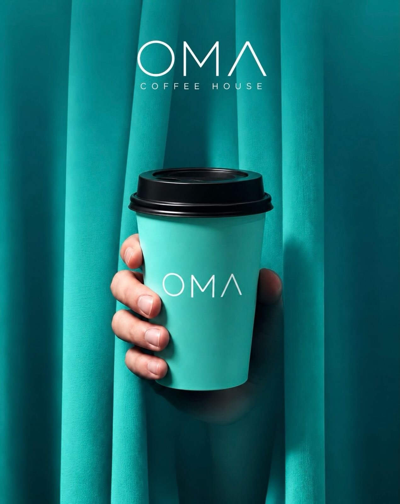
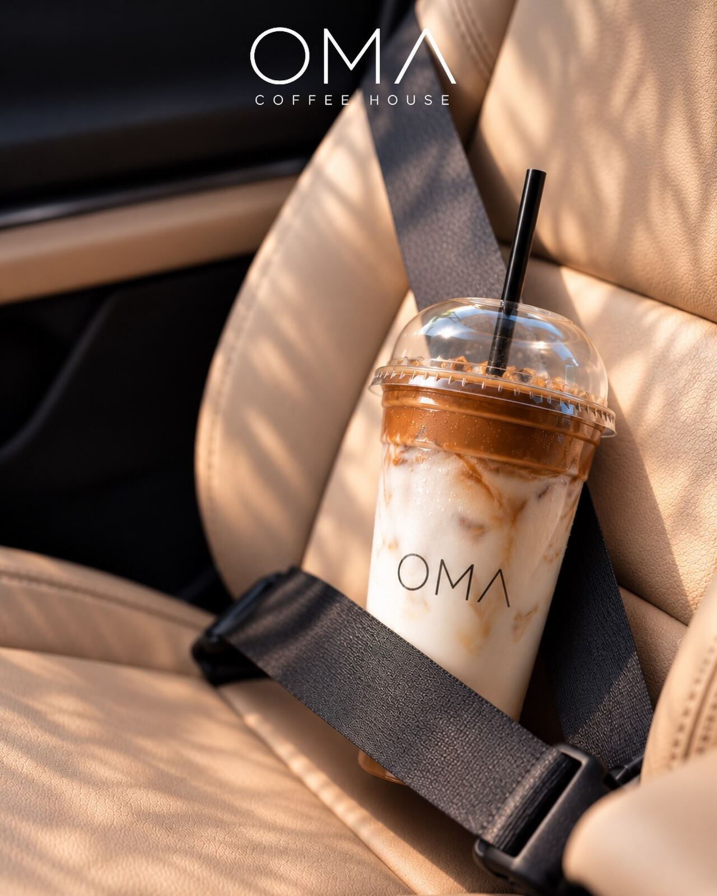
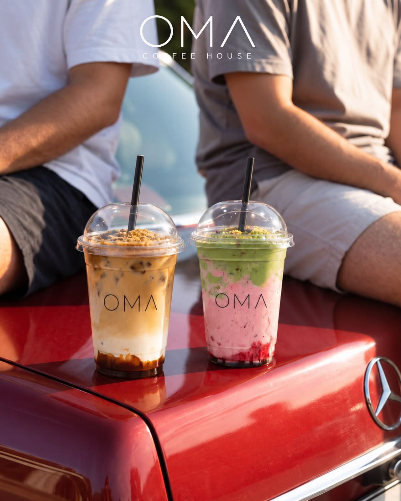
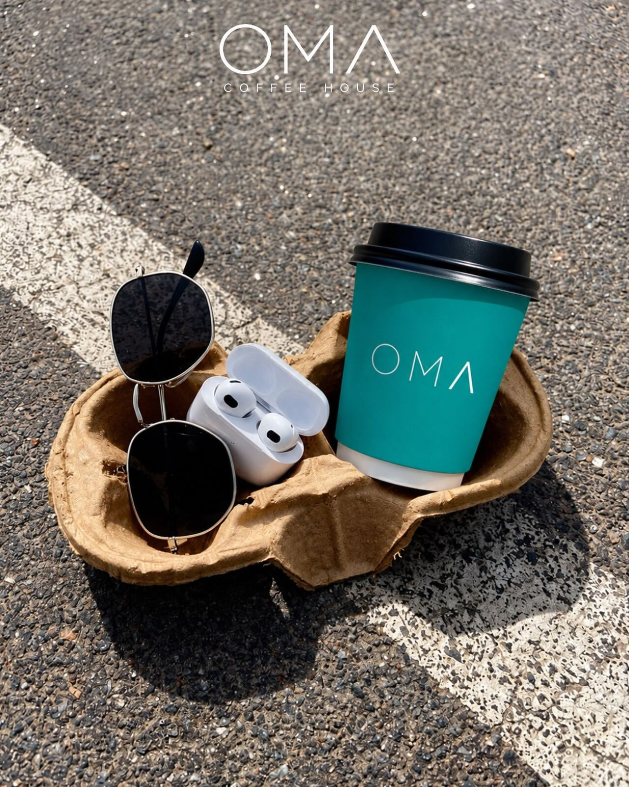
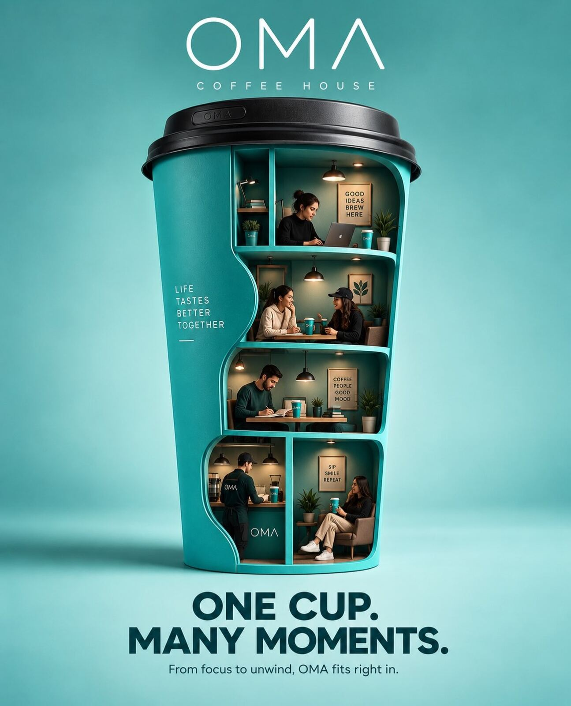
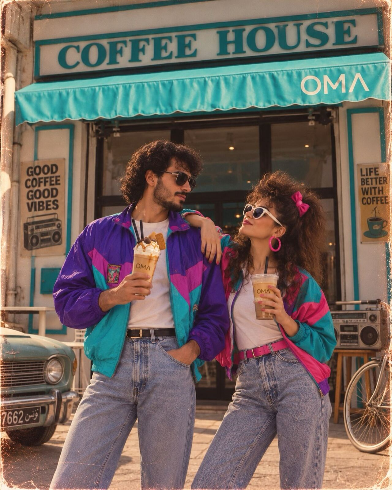
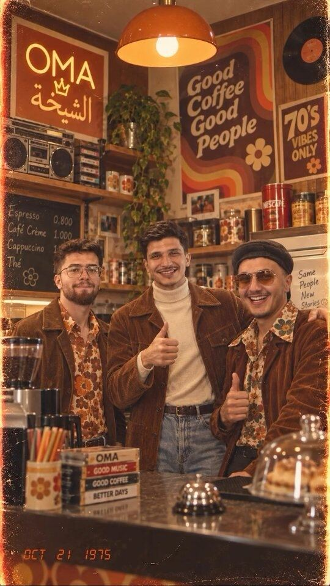
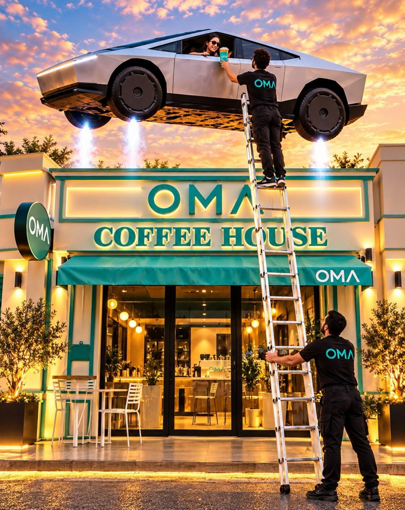
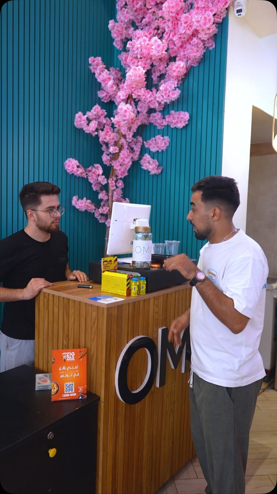

Coffee House
Sip. Smile. Repeat.
Le bonheur commence parfois par un simple café. Chez OMA, chaque tasse est une invitation à ralentir, savourer et profiter — à Mrezga, Nabeul.

MrezgaCité AFH · Nabeul
La carte
Yalla, pick your vibe
Chaud ou glacé, intense ou tout doux : du premier espresso du matin au smoothie de l’après-midi.
One cup · many moments
OMA, partout avec vous
Destination ? Peu importe, tant qu’OMA est du voyage. From focus to unwind, OMA fits right in.

Destination ?Peu importe, tant qu’OMA est du voyage. 
Two Cups TherapyUn latte, un matcha, et c’est reparti. Le réflexe du matinOma, dans le rétro. 
Le trio qui fait classeJamais deux sans trois. Toujours en orbiteBi-tabi3tna tayrin. 
One cup. Many moments.From focus to unwind.
OMA 80’s trend
OMA just rewrote the ’80s
Vestes coupe-vent, boombox et néons : quand OMA suit une tendance, c’est toute l’équipe qui remonte le temps. Good coffee, good vibes, good people.




La maison
Dehors, la pluie. Dedans, OMA.
L’auvent turquoise, le comptoir en bois, l’arbre en fleurs roses et une équipe qui a toujours le mot pour rire : bienvenue à la maison, à la Cité AFH de Mrezga.
Un café pour démarrer la semaine, un iced latte pour la route, un coin pour se poser quand il pleut.
Suivre @oma.coffee.houseVenir
On vous garde une tasse
Horaires
Pour le café du matin comme pour la pause de l’après-midi : horaires à jour sur Instagram.
Voir Instagram